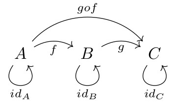
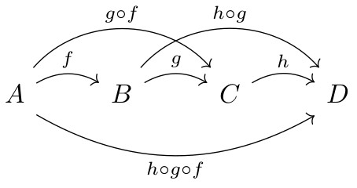

La théorie des catégories, créée dans les années 1940, a progressivement remplacé la théorie des ensembles comme outil de base pour exprimer les structures mathématiques. Dans les ensembles, on travaille avec les éléments ; dans les catégories, on travaille avec les flèches, qui expriment une relation entre 2 objets.
En travaillant comme ça, on dispose d'un outil bien plus adapté pour décrire des systèmes. Les catégories permettent à la fois de décrire la structure et le comportement, l'intelligence des systèmes.
Le définition d'une catégorie est très simple, mais on est vite noyé dans une avalanche de notions : foncteurs, transformations naturelles, objet initial et terminal, construction universelle, ordres, monoïdes, catégorie de Kleisli, lemme de Yoneda... Voir le sommaire du cours de Bartosz Milewski.
En travaillant comme ça, on dispose d'un outil bien plus adapté pour décrire des systèmes. Les catégories permettent à la fois de décrire la structure et le comportement, l'intelligence des systèmes.
Le définition d'une catégorie est très simple, mais on est vite noyé dans une avalanche de notions : foncteurs, transformations naturelles, objet initial et terminal, construction universelle, ordres, monoïdes, catégorie de Kleisli, lemme de Yoneda... Voir le sommaire du cours de Bartosz Milewski.
Définition
Dans une catégorie, on a des objets et des flèches qui vont d'un objet à l'autre. Une flèche exprime une relation entre 2 objets.Une catégorie est donc un graphe orienté : les objets sont les sommets et les flèches sont les arêtes.
Mais pour qu'un graphe orienté mérite le nom de catégorie, les flèches doivent vérifier certaines propriétés :
-
Identité : Tout objet doit avoir une flèche qui part de cet objet et arrive à cet objet sans rien changer.
On noteidAl'indentité de l'objet A. -
Composition : s'il existe une flèche de A vers B et une flèche de B vers C, alors il doit exister une flèche qui va directement de A à C.
Aller de A à B puis de B à C revient exactement au même que d'aller directement de A à C.  La flèche qui va directement de A à C s'appelle la composée de f et de g.
On noteg ( f ) = g ∘ fg∘fse prononce " g rond f ". Cette notation n'est pas intuitive car elle est à l'envers, mais elle est logique, car on appliquegau résultat def.
A la place de " g rond f ", on pourrait dire " g de f ". -
Associativité : le chemin parcouru ne change pas le résultat.

h ∘ (g ∘ f) = (h ∘ g) ∘ f
La flèche qui va directement de A à D peut donc s'écrireh ∘ g ∘ f, sans les parenthèses.
Le fait d'avoir des flèches en plus des objets permet de représenter de nombreux phénomènes de manière naturelle.
Dans la théorie des ensembles, on travaille avc les éléments.
Dans la théorie des catégories, on travaille avec les flèches.
Pour une illustration de cette différence, voir les fonctions
Catégorie des ensembles
La catégorie la plus familière à étudier est la catégorie des ensembles, notéeSet ou Ens, qui contient tous les ensembles possibles.
Dans cette catégorie,
- un objet est un ensemble,
- une flèche est une relation entre 2 ensembles.
Dans cette catégorie, n'importe quel ensemble est représenté par un objet. Un objet est sans structure, comme un point, on n'a pas de moyen d'utiliser les propriétés internes des objets.
On utilise à la place les propriétés des flèches et de leur composition.
Ce qui est déroutant car on connaît les ensembles avec lesquels on travaille, on est habitué à utiliser leur structure interne pour les étudier.
Catégorie des types et des fonctions
Cette catégorie permet de modéliser un langage informatique comprenant :- des types de données (objets)
- des fonctions pures (flèches)
Types de données
Un type de donnée peut être représenté par un ensemble dont les éléments sont les valeurs que peut prendre ce type.Ce sont des ensembles finis ou infinis :
| Type | Ensemble | N : cardinal de l'ensemble |
|---|---|---|
| Boolean | true, false | 2 |
| Char | 'a', 'b', ... | 128 |
| Integer | 1, 2, 3 ... | ∞ infini |
| Real | 0.0001, 0.0002 ... | ∞ infini |
| String | "", "a", "aa" ... | ∞ infini |
Fonctions pures
Une fonction au sens mathématique du terme :f(x) = y, prend en entrée un paramètre et renvoie une valeur.
La définition d'une fonction pure est moins stricte ; une fonction est dite pure si :
- Pour une valeur donnée d'un paramètre en entrée, elle renvoie toujours la même valeur.
- Son exécution n'a aucun effet de bord (ne modifie pas de choses qui lui sont extérieures).
// char --> boolean
boolean isVoyelle(char c){ }
En pratique, les fonctions diffèrent des fonctions mathématiques car elles peuvent :
- Avoir plusieurs paramètres (et dans certains langages renvoyer plusieurs valeurs).
- Générer des exceptions.
- Avoir des effets de bords (I/O, modification de variables globales).
- Dépendre de conditions extérieures (propriétés du système, comme l'heure).
Set car un type peut être représenté par un ensemble.
La catégorie des types fournit donc une représentation mathématique d'un langage fonctionnel.
Foncteurs
Un foncteur transforme une catégorie en une autre.Lorsqu'on spécifie un foncteur, il faut
- Spécifier comment les objets vont être transformés
- Spécifier comment les flèches vont être transformées
Constructeur
Un foncteur couramment utilisé en informatique est le contructeur de type.Lorsqu'on écrit en java :
class Animal {}
cela permet de créer des objet de type Animal :
Animal a = new Animal();On passe bien d'une première catégorie, dont les objets sont les types manipulés par notre programme :
String etc.
à une deuxième catégorie, dont les objets sont les types précédent PLUS le nouveau type,
Animal.